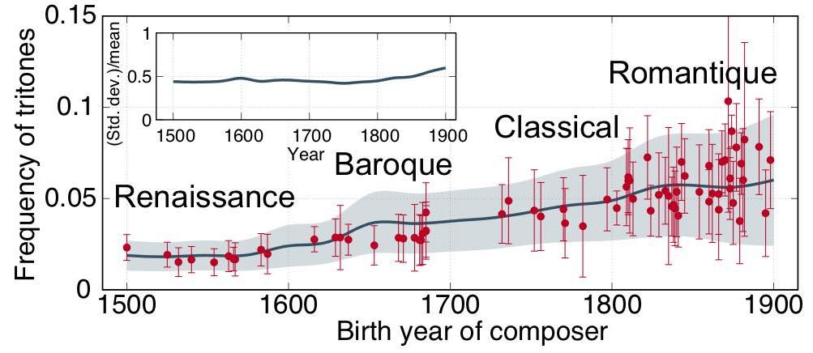
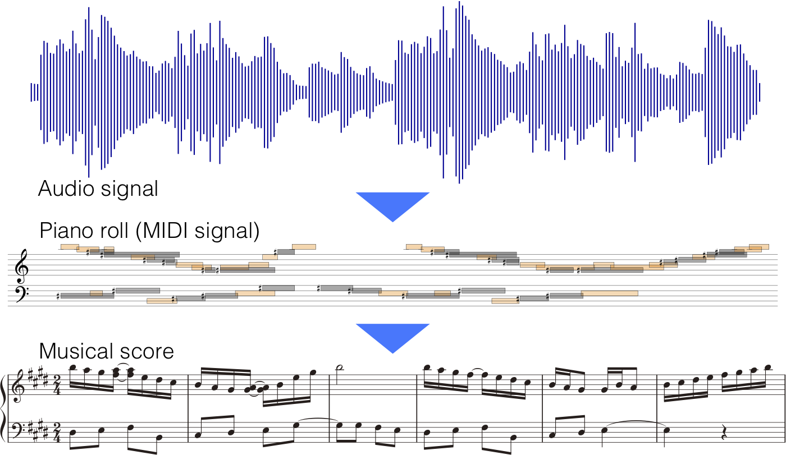
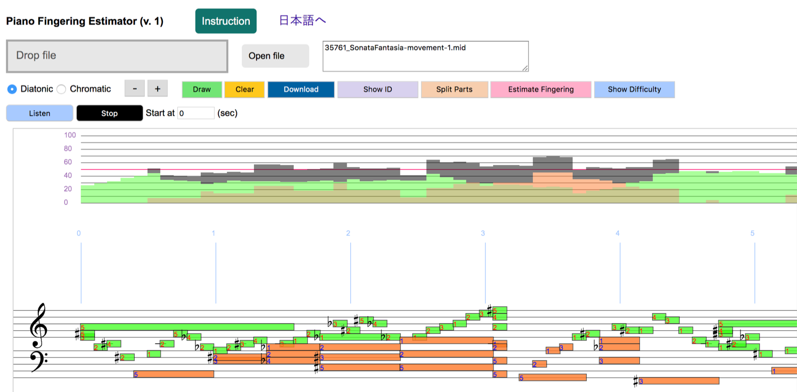
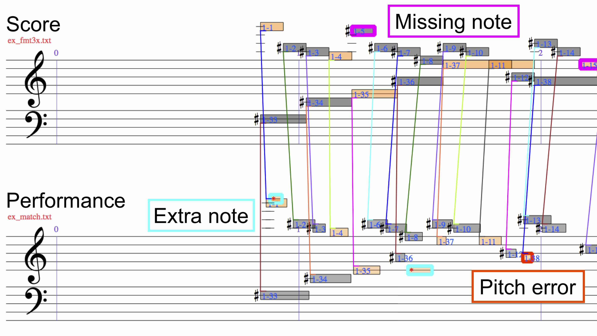

特定助教
京都大学 白眉センター
（受入先：大学院情報学研究科 音声メディア研究室）
enakamura[at]sap.ist.i.kyoto-u.ac[dot]jp
論文と研究発表 [arXiv] [Google Scholar]
略歴
京都大学 白眉センター
（受入先：大学院情報学研究科 音声メディア研究室）
enakamura[at]sap.ist.i.kyoto-u.ac[dot]jp
論文と研究発表 [arXiv] [Google Scholar]
略歴
研究の興味
- 創造的知能のモデル
- 統計学習
- 進化動力学
- 音楽情報処理
研究トピック

音楽の進化
音楽のスタイルは時代とともに変わります。それはどのように、なぜ変わるのか？未来の音楽スタイルを予測することはできるか？我々は、計算機を用いて音楽データの分析をしつつ、音楽創作過程と社会的選択の数理モデルに基づいて音楽の時代変化を調べています。
自動音楽生成
コンピューターで音楽を作曲できるだろうか？我々は、統計学習と最適化の観点から音楽創作を調べています。どのように各々の音楽スタイルが形成され伝達されるか、そして音楽的創造性における能動的で動的な統計学習の役割に興味を持っています。


自動採譜
訓練された音楽家は聞いた音楽を楽譜で表すことができます。この能力を模倣する計算論的手法を調べています。自動採譜は音楽音響信号を記号領域で分析するための重要な実験手法です。
自動伴奏・合奏
コンピューターは音楽を聞いて人間と合奏できるだろうか？我々は、人間の演奏を理解して人間と一緒に合奏するための方法を調べています。音楽演奏の多様な側面（テンポ変動、誤り、弾き直しと弾き飛ばし、装飾音など）を研究しています。


ソフトウェアとデモ
音楽の記号的整合
ある楽曲の2つの記号表現（MIDI録音と対応する楽譜など）を音符レベルで比較する方法を調べています。演奏表情を定量的に分析したり、2つのバージョンの音楽の類似性を測る際に用いられます。ソフトウェアとデモ
論文と研究発表 (抜粋)
(全てのリストはこちら。日本語の発表はこちら。)
- Eita Nakamura, Kazuyoshi Yoshii
Music Transcription Based on Bayesian Piece-Specific Score Models Capturing Repetitions
Submitted to Information Sciences [arXiv:1908.06969] - Ryo Nishikimi, Eita Nakamura, Masataka Goto, Katsutoshi Itoyama, Kazuyoshi Yoshii
Bayesian Singing Transcription Based on a Hierarchical Generative Model of Keys, Musical Notes, and F0 Trajectories
Submitted to IEEE/ACM Transactions on Audio, Speech and Language Processing - Hiroaki Tsushima, Eita Nakamura, Kazuyoshi Yoshii
Bayesian Melody Harmonization Based on a Tree-Structured Generative Model of Chord Sequences and Melodies
Submitted to IEEE/ACM Transactions on Audio, Speech and Language Processing - 柴田剛, 錦見亮, 中村栄太, 吉井和佳
同質性・反復性・規則性を考慮した階層隠れセミマルコフモデルに基づく統計的音楽構造解析
情報処理学会論文誌, 条件付き採択. - Eita Nakamura, Yasuyuki Saito, Kazuyoshi Yoshii
Statistical Learning and Estimation of Piano Fingering 
To appear in Information Sciences [arXiv:1904.10237]2019年以前
- Eita Nakamura, Kunihiko Kaneko
Statistical Evolutionary Laws in Music Styles
Scientific Reports, No. 9, No. 15993, pp. 1-11, 2019. [arXiv:1809.05832] - Eita Nakamura, Kentaro Shibata, Ryo Nishikimi, Kazuyoshi Yoshii
Unsupervised Melody Style Conversion
Proc. 44th IEEE International Conference on Acoustics, Speech and Signal Processing (ICASSP), pp. 196-200, May 2019. - Eita Nakamura, Kazuyoshi Yoshii
Statistical Piano Reduction Controlling Performance Difficulty
APSIPA Transactions on Signal and Information Processing, Vol. 7, No. e13, pp. 1–12, 2018. [arXiv:1808.05006]
- Eita Nakamura, Emmanouil Benetos, Kazuyoshi Yoshii, Simon Dixon
Towards Complete Polyphonic Music Transcription: Integrating Multi-Pitch Detection and Rhythm Quantization
Proc. 43rd IEEE International Conference on Acoustics, Speech and Signal Processing (ICASSP), pp. 101-105, April, 2018. - Hiroaki Tsushima, Eita Nakamura, Katsutoshi Itoyama, Kazuyoshi Yoshii
Generative Statistical Models with Self-Emergent Grammar of Chord Sequences
Journal of New Music Research, Vol. 47, No. 3, pp. 226–248, 2018. [arXiv:1708.02255]
- Eita Nakamura, Kazuyoshi Yoshii, Haruhiro Katayose
Performance Error Detection and Post-Processing for Fast and Accurate Symbolic Music Alignment
Proc. 18th International Society for Music Information Retrieval Conference (ISMIR), pp. 347-353, 2017. - Eita Nakamura, Kazuyoshi Yoshii, Shigeki Sagayama
Rhythm Transcription of Polyphonic Piano Music Based on Merged-Output HMM for Multiple Voices
IEEE/ACM Transactions on Audio, Speech and Language Processing, Vol. 25, No. 4, pp. 794-806, 2017. [arXiv:1701.08343]
- Eita Nakamura, Nobutaka Ono, Shigeki Sagayama, Kenji Watanabe
A Stochastic Temporal Model of Polyphonic MIDI Performance with Ornaments
Journal of New Music Research, Vol. 44, No. 4, pp. 287-304, 2015. [arXiv:1404.2314]
- Eita Nakamura, Nobutaka Ono, Shigeki Sagayama
Merged-Output HMM for Piano Fingering of Both Hands
Proc. 15th International Society for Music Information Retrieval Conference (ISMIR), pp. 531-536, 2014. - Koichi Hamaguchi, Eita Nakamura, Satoshi Shirai, Tsutomu T. Yanagida
Decaying Dark Matter Baryons in a Composite Messenger Model
Physics Letters B, Vol. 674, pp. 299-302, 2009. [arXiv:0811.0737]
2019年
連絡先
中村 栄太〒606-8501 京都府京都市左京区吉田本町 京都大学総合研究7号館417号室
Eメール: enakamura[at]sap.ist.i.kyoto-u.ac[dot]jp
電話: 075-753-4952